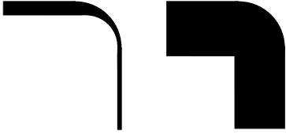
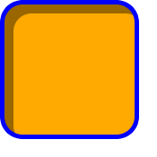
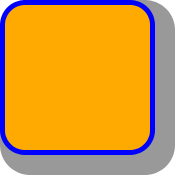

The various areas and edges of a typical box. (This diagram is explained in the CSS2.1 Box Model chapter [[!CSS21]].)
CSS is a language for describing the rendering of structured documents (such as HTML and XML) on screen, on paper, in speech, etc. This draft contains the features of CSS level 3 relating to borders and backgrounds. It includes and extends the functionality of CSS level 2 [[!CSS21]], which builds on CSS level 1 [[CSS1]]. The main extensions compared to level 2 are borders consisting of images, boxes with multiple backgrounds, boxes with rounded corners and boxes with shadows.
This module replaces two earlier drafts: CSS3 Backgrounds and CSS3 Border.
The CSS WG maintains an issues list for this module. If there's a conflict between CSS Backgrounds and Borders Level 3 and CSS 2.1, please report it to the CSS Working Group. Since these specs are intended to be consistent with each other, conflicts indicate an error in one or both specs.
The following features are at-risk and may be dropped at the end of the CR period if there has not been enough interest from implementors: inner shadows for 'box-shadow', 'border-break', 'background-break'.
This section is not normative.
When elements are rendered according to the CSS box model [[!CSS21]], each element is either not displayed at all, or formatted as one or more rectangular boxes. Each box has a rectangular content area, a band of padding around the content, a border around the padding, and a margin outside the border. (The margin may actually be negative, but margins have no influence on the background and border.)
The various areas and edges of a typical box. (This diagram is explained in the CSS2.1 Box Model chapter [[!CSS21]].)
The properties of this module deal with the decoration of the border area and with the background of the content, padding and border areas. Additionally the box may be given a "drop-shadow" effect with the 'box-shadow' property.
If an element is broken into multiple boxes, 'border-break' and 'background-break' define how the borders and background are divided over the various boxes. (An element can result in more than one box if it is broken at the end of a line, at the end of a column or at the end of a page; and continued in the next line, column or page.)
The relative stacking order of backgrounds, borders, and shadows is given in this module. For how these layers interact with other rendered content, see Appendix E “Elaborate description of Stacking Contexts” in [[!CSS21]].
This specification follows the CSS property definition conventions from [[!CSS21]].
<color> values are defined in CSS Color Level 3 [[!CSS3COLOR]].
<image> values are defined by this
specification as <image> =
<uri>.
A future specification may expand the definition of <image> to allow other values, e.g. to define image slices.
All other values are defined in CSS Level 2 Revision 1 [[!CSS21]].
All properties defined in this specification also accept the inherit keyword as their value, but for readability it has not been listed explicitly.
Each box has a background layer that may be fully transparent (the default), or filled with a color and/or one or more images. The background properties specify what color ('background-color') and images ('background-image') to use, and how they are sized, positioned, tiled, etc.
The background properties are not inherited, but the parent box's background will shine through by default because of the initial 'transparent' value on 'background-color'.
The background of a box can have multiple layers in CSS3. The number of layers is determined by the number of comma-separated values in the 'background-image' property. Note that a value of 'none' still creates a layer.
Each of the images is sized, positioned, and tiled according to the corresponding value in the other background properties. The lists are matched up from the first value: excess values at the end are not used. If a property doesn't have enough comma-separated values to match the number of layers, the UA must calculate its used value by repeating the list of values until there are enough.
For example, this set of declarations:
background-image: url(flower.png), url(ball.png), url(grass.png); background-position: center center, 20% 80%, top left, bottom right; background-origin: border-box, content-box; background-repeat: no-repeat;
has exactly the same effect as this set with the extra position dropped and the missing values for 'background-origin' and 'background-repeat' filled in (emphasized for clarity):
background-image: url(flower.png), url(ball.png), url(grass1.png); background-position: center center, 20% 80%, top left; background-origin: border-box, content-box, border-box; background-repeat: no-repeat, no-repeat, no-repeat;
The first image in the list is the layer closest to the user, the next one is painted behind the first, and so on. The background color, if present, is painted below all of the other layers.
| Name: | background-color |
|---|---|
| Value: | <color> |
| Initial: | transparent |
| Applies to: | all elements |
| Inherited: | no |
| Percentages: | N/A |
| Media: | visual |
| Computed value: | the computed color(s) |
This property sets the background color of an element. The color is drawn behind any background images.
Example:
h1 { background-color: #F00 } /* Sets background to red. */
The background color is clipped according to the 'background-clip' value associated with the bottom-most background image.
| Name: | background-image |
|---|---|
| Value: | <bg-image> [ , <bg-image> ]* |
| Initial: | none |
| Applies to: | all elements |
| Inherited: | no |
| Percentages: | N/A |
| Media: | visual |
| Computed value: | as specified, but with URIs made absolute |
This property sets the background image(s) of an element. Images are drawn with the first specified one on top (closest to the user) and each subsequent image behind the previous one. Where
<bg-image> = <image> | none
A value of ''none'' counts as an image layer but draws nothing. An image that is empty (zero width or zero height), that fails to download, or that cannot be displayed (e.g., because it is not in a supported image format) likewise counts as a layer but draws nothing.
See the section “Layering multiple background images” for how 'background-image' interacts with other comma-separated background properties to form each background image layer.
When setting a background image, authors should also specify a ''background-color'' that will preserve contrast with the text for when the image is unavailable.
Some examples specifying background images:
body { background-image: url("marble.svg") }
p { background-image: none }
div { background-image: url(tl.png), url(tr.png) }
Implementations may optimize by not downloading and drawing images that are not visible (e.g., because they are behind other, fully opaque images).
| Name: | background-repeat |
|---|---|
| Value: | <repeat> [ , <repeat> ]* |
| Initial: | repeat |
| Applies to: | all elements |
| Inherited: | no |
| Percentages: | N/A |
| Media: | visual |
| Computed value: | as specified |
Specifies how background images are tiled after they have been sized and positioned. Where
<repeat> = repeat-x | repeat-y | [repeat | space | round | no-repeat]{1,2}
Single values for <repeat> have the following meanings:
If a <repeat> value has two keywords, the first one is for the horizontal direction, the second for the vertical one, as follows:
Unless one of the two keywords is ''no-repeat'', the whole background painting area will be tiled, i.e., not just one vertical strip and one horizontal strip.
body {
background: white url("pendant.png");
background-repeat: repeat-y;
background-position: center;
}
The effect of ''repeat-y'': One copy of the background image is centered, and other copies are put above and below it to make a vertical band behind the element.
body {
background-image: url(dot.png) white;
background-repeat: space
}
The effect of 'space': the image of a dot is tiled to cover the whole background and the images are equally spaced.
See the section “Layering multiple background images” for how 'background-repeat' interacts with other comma-separated background properties to form each background image layer.
| Name: | background-attachment |
|---|---|
| Value: | <attachment> [ , <attachment> ]* |
| Initial: | scroll |
| Applies to: | all elements |
| Inherited: | no |
| Percentages: | N/A |
| Media: | visual |
| Computed value: | as specified |
If background images are specified, this property specifies whether they are fixed with regard to the viewport (''fixed'') scroll along with the element (''scroll'' and ''local''). Where
<attachment> = scroll | fixed | local
Note that there is only one viewport per view. If an element has a scrolling mechanism (see the 'overflow' property [[!CSS21]]), a ''fixed'' background doesn't move with the element, and a ''scroll'' background doesn't move with the scrolling mechanism.
The difference between ''scroll'' and ''local'' is only visible when the element has a scrolling mechanism: in the case of ''scroll'', the background does not scroll with the element's content. (It is attached to the element's border, effectively.) In the case of ''local'', the background scrolls along with the element's content. In this case, the background behind the element's border (if any) scrolls as well, even though the border itself does not scroll with the contents. The UA may, however, treat the ''border-box'' value of 'background-clip' as ''padding-box'' in cases where 'background-attachment' is ''local'' and the contents of the element scroll.
In paged media where there is no viewport, a ''fixed'' background is fixed with respect to the page box.
Even if the image is fixed, it is still only visible when it is in the background painting area of the element or otherwise unclipped. Thus, unless the image is tiled, it may be invisible.
This example creates an infinite vertical band that remains “glued” to the viewport when the element is scrolled.
body {
background: red url("pendant.gif");
background-repeat: repeat-y;
background-attachment: fixed;
}
User agents that do not support ''fixed'' backgrounds (for example due to limitations of the hardware platform) should ignore declarations with the keyword ''fixed''. For example:
body {
/* For all UAs: */
background: white url(paper.png) scroll;
/* For UAs that do fixed backgrounds: */
background: white url(ledger.png) fixed;
}
h1 {
/* For all UAs: */
background: silver;
/* For UAs that do fixed backgrounds: */
background: url(stripe.png) fixed, white url(ledger.png) fixed;
}
See the section “Layering multiple background images” for how 'background-attachment' interacts with other comma-separated background properties to form each background image layer.
| Name: | background-position |
|---|---|
| Value: | <bg-position> [ , <bg-position> ]* |
| Initial: | 0% 0% |
| Applies to: | all elements |
| Inherited: | no |
| Percentages: | refer to size of background positioning area minus size of background image; see text |
| Media: | visual |
| Computed value: | If one or two values are specified, for a <length> the absolute value, otherwise a percentage. If three or four values are specified, two pairs of a keyword plus a length or percentage. |
If background images have been specified, this property specifies their initial position (after any resizing) within their corresponding background positioning area.
Where
<bg-position> = [ [ [ <percentage> | <length> | left | center | right ] ] [ [ <percentage> | <length> | top | center | bottom ] ]? | [ center | [ left | right ] [ <percentage> | <length> ]? ] || [ center | [ top | bottom ] [ <percentage> | <length> ]? ] ]
If only one value is specified, the second value is assumed to be 'center'. If two values are given and at least one value is not a keyword, then the first value represents the horizontal position (or offset) and the second represents the vertical position (or offset). <percentage> and <length> values here represent an offset of the top left corner of the background image from the top left corner of the background positioning area.
If three or four values are given, then each <percentage> or <length> represents an offset and must be preceded by a keyword, which specifies from which edge the offset is given. For example, ''background-position: bottom 10px right 20px'' represents a ''10px'' vertical offset up from the bottom edge and a ''20px'' horizontal offset leftward from the right edge. If three values are given, the missing offset is assumed to be zero.
Positive values represent an offset inward from the edge of the background positioning area. Negative values represent an offset outward from the edge of the background positioning area.
The following declarations give the stated (horizontal, vertical) offsets from the top left corner:
background-position: left 10px top 15px; /* 10px, 15px */ background-position: left top ; /* 0px, 0px */ background-position: 10px 15px; /* 10px, 15px */ background-position: left 15px; /* 0px, 15px */ background-position: 10px top ; /* 10px, 0px */ background-position: left top 15px; /* 0px, 15px */ background-position: left 10px top ; /* 10px, 0px */
A percentage for the horizontal offset is relative to (width background positioning area - width of background image). A percentage for the vertical offset is relative to (height background positioning area - height of background image), where the size of the image is the size given by 'background-size'.
For example, with a value pair of ''0% 0%'', the upper left corner of the image is aligned with the upper left corner of, usually, the box's padding edge. A value pair of ''100% 100%'' places the lower right corner of the image in the lower right corner of the area. With a value pair of ''75% 50%'', the point 75% across and 50% down the image is to be placed at the point 75% across and 50% down the area.

Diagram of the meaning of ''background-position: 75% 50%''.
The following 'background' shorthand declarations use keywords to set 'background-position' to the stated percentage values.
body { background: url("banner.jpeg") right top } /* 100% 0% */
body { background: url("banner.jpeg") top center } /* 50% 0% */
body { background: url("banner.jpeg") center } /* 50% 50% */
body { background: url("banner.jpeg") bottom } /* 50% 100% */
In the example below, the (single) image is placed in the lower-right corner of the viewport.
body {
background-image: url("logo.png");
background-attachment: fixed;
background-position: 100% 100%;
background-repeat: no-repeat;
}
Background positions can also be relative to other corners than the top left. E.g., the following puts the background image 10px from the bottom and 3em from the right:
background-position: right 3em bottom 10px
See the section “Layering multiple background images” for how 'background-position' interacts with other comma-separated background properties to form each background image layer.
| Name: | background-clip |
|---|---|
| Value: | [border-box | padding-box ] [ , [border-box | padding-box ] ]* |
| Initial: | border-box |
| Applies to: | all elements |
| Inherited: | no |
| Percentages: | N/A |
| Media: | visual |
| Computed value: | same as specified value |
Determines the background painting area. Values have the following meanings:
Note that the background is always drawn behind the border, if any. See “Elaborate description of Stacking Contexts” in [[!CSS21]].
See the section “Layering multiple background images” for how ''background-clip'' interacts with other comma-separated background properties to form each background image layer.
| Name: | background-origin |
|---|---|
| Value: | <bg-origin> [ , <bg-origin> ]* |
| Initial: | padding-box |
| Applies to: | all elements |
| Inherited: | no |
| Percentages: | N/A |
| Media: | visual |
| Computed value: | same as specified value |
For elements rendered as a single box, specifies the background positioning area. For elements rendered as multiple boxes (e.g., inline boxes on several lines, boxes on several pages) specifies which boxes the 'background-break' operates on to determine the background positioning area(s). Where
<bg-origin> = border-box | padding-box | content-box
If the 'background-attachment' value for this image is ''fixed'', then this property has no effect: in this case the background positioning area is the initial containing block [[!CSS21]].
Note that if 'background-clip' is ''padding-box'',
'background-origin' is ''border-box'', and 'background-position' is
top left (the initial value), then the top left of the
background image will be clipped.
See the section “Layering multiple background images” for how ''background-clip'' interacts with other comma-separated background properties to form each background image layer.
| Name: | background-size |
|---|---|
| Value: | <bg-size> [ , <bg-size> ]* |
| Initial: | auto |
| Applies to: | all elements |
| Inherited: | no |
| Percentages: | see text |
| Media: | visual |
| Computed value: | for <length> the absolute value, otherwise as specified |
Specifies the size of the background images. Where
<bg-size> = [ <length> | <percentage> | auto ]{1,2} | cover | contain
Values have the following meanings:
The first value gives the width of the corresponding image, the second value its height. If only one value is given the second is assumed to be ''auto''.
A percentage is relative to the background positioning area.
An ''auto'' value for one dimension is resolved by using the image's intrinsic ratio and the size of the other dimension, or failing that, using the image's intrinsic size, or failing that, treating it as 100%.
If both values are ''auto'' then the intrinsic width and/or height of the image should be used, if any, the missing dimension (if any) behaving as ''auto'' as described above. If the image has neither an intrinsic width nor an intrinsic height, its size is determined as for ''contain''.
Negative values are not allowed.
Here are some examples. The first example stretches the background image independently in both directions to completely cover the content area:
div {
background-image: url(plasma.png);
background-size: 100% 100%;
background-origin: content-box }
The second example stretches the image so that exactly two copies fit horizontally. The aspect ratio is preserved:
p {
background-image: url(tubes.png);
background-size: 50% auto;
background-origin: border-box }
This example forces the background image to be 15 by 15 pixels:
para {
background-size: 15px 15px;
background-image: url(tile.png)}
This example uses the image's intrinsic size. Note that this is the only possible behavior in CSS level 1 and 2.
body {
background-size: auto; /* default */
background-image: url(flower.png) }
The following example rounds the height of the image to 25%, down from the specified value of 30%. At 30%, three images would fit entirely and a fourth only partially. After rounding, four images fit. The width of the image is 20% of the background area width and is not rounded.
p {
background-image: url(chain.png);
background-repeat: no-repeat round;
background-size: 20% 30% }
If 'background-repeat' is ''round'' for one (or both) directions, there is a second step. The UA must reduce the size in that direction (or both directions) so that the image fits a whole number of times in the background area. In the case of the width:
If X ≠ 0 is the width of the image after step one and W is the width of the background area, then the rounded width X' = W / ceil(W / X)
The height is analogous. ceil() is a function that returns its argument if it is a whole number, otherwise the next bigger whole number.
If 'background-repeat' is ''round'' for one direction only and if 'background-size' is ''auto'' for the other direction, then there is a third step: that other direction is scaled so that the original aspect ratio is restored.
In this example the background image is shown at its intrinsic size:
div {
background-image: url(image1.png);
background-repeat: repeat; /* default */
background-size: auto } /* default */
In the following example, the background is shown with a width of 3em and its height is scaled proportionally to keep the original aspect ratio:
div {
background-image: url(image2.png);
background-repeat: repeat; /* default */
background-size: 3em } /* = '3em auto' */
In the following example, the background is shown with a width of 3em or slightly smaller, so that it fits a whole number of times in the width of the background. The height is scaled proportionally to keep the original aspect ratio:
div {
background-image: url(image3.png);
background-repeat: round repeat;
background-size: 3em auto }
In the following example, the background image is shown with a width of 3em and a height that is either the height corresponding to that width at the original aspect ratio or slightly less:
div {
background-image: url(image4.png);
background-repeat: repeat round;
background-size: 3em auto }
In the following example, the background image is shown with a height of 4em or slightly less, so that it fits a whole number of times in the background height. The width is the width that correspond to a 4em height at the original aspect ratio or slightly less:
div {
background-image: url(image5.png);
background-repeat: round;
background-size: auto 4em }
If the background image's width or height resolves to zero, this causes the image not to be displayed. (The effect is the same as if it had been a transparent image.)
See the section “Layering multiple background images” for how 'background-clip' interacts with other comma-separated background properties to form each background image layer.
| Name: | background-break |
|---|---|
| Value: | bounding-box | each-box | continuous |
| Initial: | continuous |
| Applies to: | all elements |
| Inherited: | no |
| Percentages: | N/A |
| Media: | visual |
| Computed value: | same as specified value |
This property applies to elements when they are broken into several boxes (for example, across lines or across pages). It specifies how the background positioning area is derived from these multiple boxes and how the element's background is drawn within them.
Values have the following meanings:
The effect is as if, after the element has been laid out (including any justification, bidi reordering, page breaks, etc.), all the element's boxes are taken and put one after the other in visual order. The background is applied to the bounding box of this composite box and then the boxes are put back, with their share of the background.
For boxes broken across lines, first boxes on the same line are connected in visual order. Then boxes on subsequent lines are ordered according to the element's inline progression direction and aligned on the baseline. For example in a left-to-right containing block ('direction' is ''ltr''), the first box is the leftmost box on the first line and boxes from subsequent lines are put to the right of it. In a right-to-left containing block, the first box is the rightmost on the first line and subsequent boxes are put to the left of it.
For boxes broken across columns, the the columns are treated as one continuous element, as if the column boxes were glued together in the block progression direction of the multi-column element. For boxes broken across pages, the page content areas are glued together in the block progression direction of the root element. In these cases, if the pieces have different widths (heights, if the root element / multi-column element is in vertical text mode), then each piece draws its background assuming that the whole element has the same width (height) as this piece. This ensures that right-aligned images stay aligned to the right edge, left-aligned images stay aligned to the left edge, and centered images stay centered.
| Name: | background |
|---|---|
| Value: | [ <bg-layer> , ]* <final-bg-layer> |
| Initial: | see individual properties |
| Applies to: | all elements |
| Inherited: | no |
| Percentages: | see individual properties |
| Media: | visual |
| Computed value: | see individual properties |
Where
<bg-layer> = <bg-image> || <bg-position> || / <bg-size> || <repeat> || <attachment> || <bg-origin>
where ''<bg-position>'' must not occur before ''/ <bg-size>'' if both are present.
<final-bg-layer> = <bg-image> || <bg-position> || / <bg-size> || <repeat> || <attachment> || <bg-origin> || <'background-color'>
where ''<bg-position>'' must not occur before ''/ <bg-size>'' if both are present.
Note that a color is permitted in <final-bg-layer>, but not in <bg-layer>.
The 'background' property is a shorthand property for setting most background properties at the same place in the style sheet. Given a valid declaration, the shorthand first sets each of 'background-color', 'background-position', 'background-size', 'background-repeat', 'background-origin', 'background-clip', 'background-attachment' and 'background-image' to its initial value, then assigns explicit values given in the declaration.
If 'background-origin' is present and its value matches a possible value for 'background-clip' then it also sets 'background-clip' to that value. For example, ''background: border-box'' sets both 'background-origin' and 'background-clip' to ''border-box''.
The 'background' shorthand does not set 'background-break'.
In the first rule of the following example, only a value for 'background-color' has been given and the other individual properties are set to their initial values. In the second rule, many individual properties have been specified.
body { background: red }
p { background: url("chess.png") / 10em gray
40% round fixed border border}
The first rule is equivalent to:
body {
background-color: red;
background-position: 0% 0%;
background-size: auto auto;
background-repeat: repeat repeat;
background-clip: border-box;
background-origin: padding-box;
background-attachment: scroll;
background-image: none }
The second is equivalent to:
p {
background-color: gray;
background-position: 40% 50%;
background-size: 10em 10em;
background-repeat: round round;
background-clip: border-box;
background-origin: border-box;
background-attachment: fixed;
background-image: url(chess.png) }
The following example shows how a both a background color (#CCC) and a background image (url(metal.jpg)) are set. The image is stretched to the full width of the element:
E { background: #CCC url("metal.jpg") /100% auto no-repeat top left }
Another example shows equivalence:
div { background: padding url(paper.jpg) white center }
div {
background-color: white;
background-image: url(paper.jpg);
background-repeat: repeat;
background-attachment: scroll;
background-position: center;
background-clip: padding-box;
background-origin: padding-box;
background-size: auto auto }
The following declaration with multiple, comma-separated values
background: url(a.png) top left no-repeat,
url(b.png) center / 100% 100% no-repeat,
url(c.png) white;
is equivalent to
background-image: url(a.png), url(b.png), url(c.png); background-position: top left, center, top left; background-repeat: no-repeat, stretch no-repeat, repeat; background-clip: border-box, border-box, border-box; background-origin: padding-box, padding-box, padding-box; background-size: auto auto, 100% 100%, auto auto; background-attachment: scroll, scroll, scroll; background-color: white;
Note that ''background: url(foo) white'' and ''background: url(foo), white'' have the same effect.
The background of the root element becomes the background of the canvas and its background painting area extends to cover the entire canvas, although any images are sized and positioned relative to the root element as if they were painted for that element alone. (In other words, the background positioning area is determined as for the root element.) If the root's 'background-color' value is ''transparent'', the canvas's background color is UA dependent. The root element does not paint this background again, i.e. the used value of its background is transparent.
For documents whose root element is an HTML HTML
element or an XHTML html element: if the computed
value of 'background-image' on the root element is ''none'' and its
'background-color' is ''transparent'', user agents must instead propagate
the computed values of the background properties from that element's first
HTML BODY or body child
element. The used values of that BODY element's
background properties are their initial values, and the propagated values
are treated as if they were specified on the root element.
It is recommended that authors of HTML documents specify the canvas background
for the BODY element rather than the
HTML element.
According to these rules, the canvas underlying the following HTML document will have a “marble” background:
<!DOCTYPE html PUBLIC '-//W3C//DTD HTML 4.0//EN'
>
<html>
<head>
<title>Setting the canvas background</title>
<style type="text/css">
body { background: url("http://example.org/marble.png") }
</style>
</head>
<body>
<p>My background is marble.</p>
</body>
</html>
The ''::first-line'' pseudo-element is like an inline-level element for the purposes of the background (see section 5.12.1 of [[!CSS21]]). That means, e.g., that in a left-justified first line, the background does not necessarily extend all the way to the right margin.
The border can either be a predefined style (solid line, double line, dotted line, pseudo-3D border, etc.) or it can be an image. In the former case, various properties define the style ('border-style'), color ('border-color'), and thickness ('border-width') of the border.
| Name: | border-top-color , border-right-color, border-bottom-color, border-left-color |
|---|---|
| Value: | <color> |
| Initial: | currentcolor |
| Applies to: | all elements |
| Inherited: | no |
| Percentages: | N/A |
| Media: | visual |
| Computed value: | the computed color |
| Name: | border-color |
|---|---|
| Value: | <color>{1,4} |
| Initial: | (see individual properties) |
| Applies to: | all elements |
| Inherited: | no |
| Percentages: | N/A |
| Media: | visual |
| Computed value: | see individual properties |
These properties set the foreground color of the border specified by the border-style properties.
'Border-color' is a shorthand for the four 'border-*-color' properties. The four values set the top, right, bottom and left border, respectively. A missing left is the same as right, a missing bottom is the same as top, and a missing right is also the same as top.
| Name: | border-top-style, border-right-style, border-bottom-style, border-left-style |
|---|---|
| Value: | <border-style> |
| Initial: | none |
| Applies to: | all elements |
| Inherited: | no |
| Percentages: | N/A |
| Media: | visual |
| Computed value: | specified value |
| Name: | border-style |
|---|---|
| Value: | <border-style>{1,4} |
| Initial: | (see individual properties) |
| Applies to: | all elements |
| Inherited: | no |
| Percentages: | N/A |
| Media: | visual |
| Computed value: | see individual properties |
These properties set the style of the border, unless there is a border image
'Border-style' is a shorthand for the other four. Its four values set the top, right, bottom and left border respectively. A missing left is the same as right, a missing bottom is the same as top, and a missing right is also the same as top.
Where
<border-style> = none | hidden | dotted | dashed | solid | double | groove | ridge | inset | outset
Values have the following meanings:
Borders are drawn in front of the element's background, but behind the element's content (in case it overlaps).

Example renderings of the predefined border styles.
Note: There is no control over the spacing of the dots and dashes, nor over the length of the dashes. Implementations are encouraged to choose a spacing that makes the corners symmetrical.
Note: This specification does not define how borders of different styles should be joined in the corner. Also note that rounded corners may cause the corners and the contents to overlap, if the padding is less than the radius of the corner.
| Name: | border-top-width, border-right-width, border-bottom-width, border-left-width |
|---|---|
| Value: | <border-width> |
| Initial: | medium |
| Applies to: | all elements |
| Inherited: | no |
| Percentages: | width* of containing block |
| Media: | visual |
| Computed value: | absolute length; '0' if the border style is 'none' or 'hidden' |
| *) if the containing block has a horizontal text mode, otherwise the height | |
| Name: | border-width |
|---|---|
| Value: | <border-width>{1,4} |
| Initial: | (see individual properties) |
| Applies to: | all elements |
| Inherited: | no |
| Percentages: | see individual properties |
| Media: | visual |
| Computed value: | see individual properties |
These properties set the thickness of the border. Where
<border-width> = <length> | thin | medium | thick
The <length> may not be negative. The lengths corresponding to ''thin'', ''medium'' and ''thick'' are not specified, but the values are constant throughout a document and thin ≤ medium ≤ thick. A UA could, e.g., make the thickness depend on the ''medium'' font size: one choice might be 1, 3 & 5px when the 'medium' font size is 17px or less.
'Border-width' is a shorthand that sets the four 'border-*-width' properties. If it has four values, they set top, right, bottom and left in that order. If left is missing, it is the same as right; if bottom is missing, it is the same as top; if right is missing, it is the same as top.
Note that the initial width is 'medium', but the initial style is 'none' and therefore the used width is 0.
When the used width of the border is 0, we say that the border is absent.
| Name: | border-top-right-radius, border-bottom-right-radius, border-bottom-left-radius, border-top-left-radius |
|---|---|
| Value: | <length> <length>? |
| Initial: | 0 |
| Applies to: | all elements (but see prose) |
| Inherited: | no |
| Percentages: | N/A |
| Media: | visual |
| Computed value: | two absolute <length>s |
| Name: | border-radius |
|---|---|
| Value: | <length>{1,4} [ / <length>{1,4} ]? |
| Initial: | 0 |
| Applies to: | all elements, except table element when 'border-collapse' is ''collapse'' |
| Inherited: | no |
| Percentages: | N/A |
| Media: | visual |
| Computed value: | see individual properties |
The two length values of the 'border-*-radius' properties define the radii of a quarter ellipse that defines the shape of the corner of the outer border edge (see the diagram below). The first value is the horizontal radius. If the second length is omitted it is equal to the first (and the corner is thus a quarter circle). If either length is zero, the corner is square, not rounded.
The 'border-radius' shorthand sets all four 'border-*-radius' properties. If values are given before and after the slash, then the values before the slash set the horizontal radius and the values after the slash set the vertical radius. If there is no slash, then the values set both radii equally. The four values for each radii are given in the order top-left, top-right, bottom-right, bottom-left. If bottom-left is omitted it is the same as top-right. If bottom-right is omitted it is the same as top-left. If top-right is omitted it is the same as top-left.
border-radius: 4em;would be equivalent to
border-top-left-radius: 4em; border-top-right-radius: 4em; border-bottom-right-radius: 4em; border-bottom-left-radius: 4em;and
border-radius: 2em 1em 4em / 0.5em 3em;would be equivalent to
border-top-left-radius: 2em 0.5em; border-top-right-radius: 1em 3em; border-bottom-right-radius: 4em 0.5em; border-bottom-left-radius: 1em 3em;
The padding edge (inner border) radius is the outer border radius minus the corresponding border thickness. In the case where this results in a negative value, the inner radius is zero. (In such cases its center might not coincide with that of the outer border curve.) Likewise the content edge radius is the padding edge radius minus the corresponding padding, or if that is negative, zero. Thus when two adjoining borders are of different thicknesses the corner will show a smooth transition between the thicker and thinner borders.
If the curve interferes with UI elements such as scrollbars, the UA may reduce the used value of the affected border radii as necessary, but no more.
Backgrounds, but not the border-image, are clipped to the appropriate curve (as determined by 'background-clip'). Other effects that clip to the border or padding edge (such as 'overflow' other than ''visible'') also must clip to the curve. The content of replaced elements is always trimmed to the border edge curve.
The center of color and style transitions between adjoining borders is at the point on the curve that is at an angle that is proportional to the ratio of the border widths. For example, if the two widths are equal, that point is at a 45° angle, and if one is twice the width of the other the point is at a 30° angle. The line demarcating this transition is drawn between the point at that angle on the outer curve and the point at that angle on the inner curve. The transition must be contained within the segment of the border where the tangent of the inner curve either not defined or is not parallel with the sides of the box. It is not defined what the transition looks like, but a gradient is recommended for color transitions that don't involve dotted or dashed borders.

The two values of ''border-top-left-radius: 55pt 25pt'' define the curvature of the corner.

The effect of a rounded corner when the two borders it connects are of unequal thickness (left) and the effect of a rounded corner on borders that are thicker than the radius of the corner (right).
All border styles (''solid'', ''dotted'', ''inset'', etc.) follow the curve of the border.
Corners do not overlap: When the sum of two adjacent corner radii exceeds the size of the border box, UAs must reduce one or more of the radii. The algorithm for reducing radii is as follows:
The sum of two adjacent radii may not be more than the width or height (whichever is relevant) of the box. If any sum exceeds that value, the used values of all radii are reduced according to the following formula: Let f = min(Li/Si), where i ∈ {top, right, bottom, left}, Si is the sum of the radii of the corners on side i, and Ltop = Lbottom = the width of the box, and Lleft = Lright = the height of the box. If f < 1, then all corner radii are reduced by multiplying them by f.
Note that this formula ensures that quarter circles remain quarter circles and large radii remain larger than smaller ones, but it may reduce corners that were already small enough, which may make borders of nearby elements that should look the same look different.
For example, the borders A and D of the figure below might be the result of
box-width: border-box; width: 6em; height: 2.5em; border-radius: 0.5em 2em 0.5em 2em
The height (2.5em) is enough for the specified radii (0.5em plus 2.5em). However, if the height is only 2em,
box-width: border-box; width: 6em; height: 2em; border-radius: 0.5em 2em 0.5em 2em
all corners need to be reduced by a factor 0.8 to make them fit. The used border radii thus are 0.4em (instead of 0.5em) and 1.6em (instead of 2em). See borders B and C in the figure.
These rounded corner might be the result of 'width: 6em; height: 2.5em; border-radius: 0.5em 2em 0.5em 2em' for A and D; and ditto but with 'height: 2em' for B and C.
The UA may apply the border-radius properties to ''table'' and ''inline-table'' elements when 'border-collapse' is ''collapse'' but is not required to. In this case not only must the border radii of adjacent corners not intersect, but the horizontal and vertical radii of a single corner may not extend past the boundaries of the cell at that corner (i.e. the cell's other corners must not be affected by this corner's border-radius). If the computed values of the border radii would cause this effect, then the used values of all the border radii of the table must be reduced by the same factor so that the radii neither intersect nor extend past the boundaries of their respective corner cells.
The CSS3 UAs should ignore border-radius properties applied to internal table elements when 'border-collapse' is ''collapse''. The effect of border-radius on internal table elements is undefined in CSS3 Backgrounds and Borders, but may be defined in a future specification.
This example draws ovals of 15em wide and 10em high:
DIV.standout {
width: 13em;
height: 8em;
border: solid black 1em;
border-radius: 7.5em 5em }
This example adds appropriate padding, so that the contents do not overflow the corners. Note that there is no border, but the background will still have rounded corners.
DIV {
background: black;
color: white;
border-radius: 1em;
padding: 1em }
| Name: | border-break |
|---|---|
| Value: | close | [ <border-width> || <border-style> || <color> ] |
| Initial: | none |
| Applies to: | elements with a border |
| Inherited: | no |
| Percentages: | N/A |
| Media: | visual |
| Computed value: | any <length;> made absolute; any color computed; otherwise as specified |
When a box that has a border is broken at a page break, column break, or, for inline elements, at a line break, a border and some padding can be inserted at the break, or the border can be left open.
If the value of 'border-break' is ''close'', then each box is independently wrapped with the border and padding. The 'border-radius', 'border-image', and 'box-shadow', if any, are applied to each box independently.
Otherwise, if the style is set to ''none'', no border and no padding are inserted at the break. If some other border style is given, padding is added as wide as the corresponding side of the 'padding' property, and a border is added with the specified style, width, and color. In either case, no box-shadow is drawn at the broken edge; 'border-radius' has no effect at its corners; and the 'border-image' is rendered for the whole box as if it were unbroken. The effect is as though the element were rendered with no break present, and then sliced by the break afterward.
Note this means that padding is added if the border style is ''hidden'', but not if the border style is ''none''.

Two possibilities for 'border-break': on the left, the value ''none'', on the right the value ''solid''.
For inline elements side of the box that breaks is determined by the element's inline progression direction, not that of the containing block. For example, the first part of an inline element with ''direction: rtl'' inside a block with ''direction: ltr'' will break on the left side.
| Name: | border-top, border-right, border-bottom, border-left |
|---|---|
| Value: | <border-width> || <border-style> || <color> |
| Initial: | See individual properties |
| Applies to: | all elements |
| Inherited: | no |
| Percentages: | N/A |
| Media: | visual |
| Computed value: | see individual properties |
This is a shorthand property for setting the width, style, and color of the top, right, bottom, and left border of a box. Omitted values are set to their initial values.
| Name: | border |
|---|---|
| Value: | <border-width> || <border-style> || <color> |
| Initial: | See individual properties |
| Applies to: | all elements |
| Inherited: | no |
| Percentages: | N/A |
| Media: | visual |
| Computed value: | see individual properties |
The 'border' property is a shorthand property for setting the same width, color, and style for all four borders of a box. Unlike the shorthand 'margin' and 'padding' properties, the 'border' property cannot set different values on the four borders. To do so, one or more of the other border properties must be used.
The 'border' shorthand also resets 'border-image' to its initial value. It is therefore recommended that authors use the 'border' shorthand, rather than other shorthands or the individual properties, to override any border settings earlier in the cascade. This will ensure that 'border-image' has also been reset to allow the new styles to take effect.
The CSS Working Group intends for the 'border' shorthand to reset all border properties in future levels of CSS as well. For example, if a 'border-characters' property is introduced in the future to allow glyphs as borders, it will also be reset by the 'border' shorthand. By using the 'border' shorthand to reset borders, authors can be guaranteed a "blank canvas" no matter what properties are introduced in the future.
For example, the first rule below is equivalent to the set of four rules shown after it:
p { border: solid red }
p {
border-top: solid red;
border-right: solid red;
border-bottom: solid red;
border-left: solid red;
border-image: none;
}
Since, to some extent, the properties have overlapping functionality, the order in which the rules are specified is important.
Consider this example:
blockquote {
border-color: red;
border-left: double;
color: black
}
In the above example, the color of the left border is black, while the other borders are red. This is due to 'border-left' setting the width, style, and color. Since the color value is not given by the 'border-left' property, it will be taken from the 'color' property. The fact that the 'color' property is set after the 'border-left' property is not relevant.
| Name: | box-shadow |
|---|---|
| Value: | none | <shadow> [ , <shadow> ]* |
| Initial: | none |
| Applies to: | all elements |
| Inherited: | no |
| Percentages: | N/A |
| Media: | visual |
| Computed value: | any <length> made absolute; any color computed; otherwise as specified |
The 'box-shadow' property attaches one or more drop-shadows to the box. The property is a comma-separated list of shadows, each specified by 2-4 length values, an optional color, and an optional ''inset'' keyword. Omitted lengths are 0, omitted colors are a UA-chosen color.
Where
<shadow> = inset? && [ <length>{2,4} && <color>? ]
The components of each <shadow> are interpreted as follows:
An outer box-shadow casts a shadow as if the border-box of the element were opaque. The shadow is drawn outside the border edge only: it is not drawn inside the border-box of the element.
An inner box-shadow casts a shadow as if everything outside the padding edge were opaque. The inner shadow is drawn inside the padding edge only: it is not drawn outside the padding box of the element.
If the box has a nonzero 'border-radius', the shadow is rounded in the same way. If an element has multiple boxes, all of them get drop shadows, but shadows are only drawn where borders would also be drawn, see 'border-break'.
The shadow effects are applied front-to-back: the first shadow is on top and the others are layered behind. Shadows do not influence layout and may overlap other boxes or their shadows. In terms of stacking contexts and the painting order, the outer shadows of an element are drawn immediately below the background of that element, and the inner shadows of an element are drawn immediately above the background of that element (below the borders and border image, if any).
Below are some examples of an orange box with a blue border being being given a drop shadow.
|
|
|
|---|---|---|
|

|

|
|  |

|
|  |

|
|

|

|
The ''box-shadow'' property applies to the ''::first-letter'' pseudo-element, but not the ''::first-line'' pseudo-element. Outer shadows have no effect on internal table elements in the collapsing border model. If a shadow is defined for single border edge in the collapsing border model has multiple border thicknesses (e.g. an outer shadow on a table where one row has thicker borders than the others, or an inner shadow on a rowspanning table cell that adjoins cells with different border thicknesses), the exact position and rendering its shadows are undefined.
| Name: | border-image-source |
|---|---|
| Value: | none | <image> |
| Initial: | none |
| Applies to: | All elements, except internal table elements when 'border-collapse' is ''collapse'' |
| Inherited: | no |
| Percentages: | N/A |
| Media: | visual |
| Computed value: | ''none'' or the image with its URI made absolute |
Specifies an image to use instead of the border styles given by the 'border-style' properties and as an additional background layer for the element. If the value is ''none'' or if the image cannot be displayed, the border styles will be used.
| Name: | border-image-slice |
|---|---|
| Value: | <number> | <percentage>]{1,4} && fill? |
| Initial: | 100% |
| Applies to: | All elements, except internal table elements when 'border-collapse' is ''collapse'' |
| Inherited: | no |
| Percentages: | refer to size of the border image |
| Media: | visual |
| Computed value: | as specified |
The four 'border-image-slice' values represent inward offsets from the top, right, bottom, and left edges of the image (respectively), dividing it into nine regions: four corners, four edges and a middle. The middle image part is discarded (treated as fully transparent) unless the ''fill'' keyword is present.
If the fourth number/percentage is absent, it is the same as the second. If the third one is also absent, it is the same as the first. If the second one is also absent, it is the same as the first.
Percentages are relative to the size of the image. Numbers represent pixels in the image (if the image is a raster image) or vector coordinates (if the image is a vector image). Negative values are not allowed and values bigger than the size of the image are interpreted as 100%.
The regions given by the 'border-image-slice' values may overlap. However if the sum of the right and left widths is equal to or greater than the width of the image, the images for the top and bottom edge and the middle part are empty, which has the same effect as if a nonempty transparent image had been specified for those parts. Analogously for the top and bottom values.
Diagram illustrating the cuts corresponding to the value ''url("foo") 25% 30% 12% 20%''
| Name: | border-image-width |
|---|---|
| Value: | [ <length> | <percentage> | <number> | from-image ]{1,4} |
| Initial: | 1 |
| Applies to: | All elements, except table elements when 'border-collapse' is ''collapse'' |
| Inherited: | no |
| Percentages: | N/A |
| Media: | visual |
| Computed value: | all <length>s made absolute, otherwise as specified |
The border image is drawn inside an area called the border image area. This is a nine-part area whose boundaries by default correspond to the border box.
The four numeric, percentage, or length values of 'border-image-width' specify offsets that are used to divide the border-image area into nine parts. The four values represent inward distances from the the top, right, bottom, and left sides of the border-image area, respectively. If the fourth value is absent, it is the same as the second. If the third one is also absent, it is the same as the first. If the second one is also absent, it is the same as the first. Percentages refer to the size of the border-image area. Numbers represent multiples of the corresponding border-width.
Should percentages be used instead of numbers for ratios?
If ''intrinsic'' is specified then the border image widths are found from the intrinsic sizes of the image slices. If the image does not have the required intrinsic dimensions then the corresponding border-width is used instead.
If two opposite 'border-image-width' offsets are large enough that they overlap, then their used values are proportionally reduced until they no longer overlap.
| Name: | border-image-outset |
|---|---|
| Value: | <length> | <number>]{1,4} |
| Initial: | 0 |
| Applies to: | All elements, except internal table elements when 'border-collapse' is ''collapse'' |
| Inherited: | no |
| Percentages: | N/A |
| Media: | visual |
| Computed value: | all <length>s made absolute, otherwise as specified |
The border-image-outset values specify the amount by which the border image area extends beyond the border box on the top, right, bottom, and left sides respectively. If the fourth length is absent, it is the same as the second. If the third one is also absent, it is the same as the first. If the second one is also absent, it is the same as the first. Numbers represent multiples of the corresponding border-width.
Negative values are not allowed for any of the border-image values.
| Name: | border-image-repeat |
|---|---|
| Value: | [ stretch | repeat | round ]{1,2} |
| Initial: | stretch |
| Applies to: | All elements, except internal table elements when 'border-collapse' is ''collapse'' |
| Inherited: | no |
| Percentages: | N/A |
| Media: | visual |
| Computed value: | as specified |
This property specifies how the images for the sides and the middle part of the border image are scaled and tiled. If the second keyword is absent, it is assumed to be the same as the first.
The WG wanted to solicit ideas for an alternative name to this property.
The nine images are scaled and tiled in four steps:
The two images for the top and bottom edges are made as tall as the top and bottom border-image area parts, respectively, and their width is scaled proportionally.
The images for the left and right edge are made as wide as the left and right border-image area parts, respectively, and their height is scaled proportionally.
The corner images are scaled to be as wide and as tall as the two border-image edges they are part of.
The middle image's width is scaled by the same factor as the top image unless that factor is zero or infinity, in which case the scaling factor of the bottom is substituted, and failing that, the width is not scaled. The height of the middle image is scaled by the same factor as the left image unless that factor is zero or infinity, in which case the scaling factor of the right image is substituted, and failing that, the height is not scaled.
If the first keyword is ''stretch'', the top, middle and bottom images are further scaled to be as wide as the middle part of the border-image area. The height is not changed any further.
If the first keyword is ''round'', the top, middle and bottom images are reduced in width, so that exactly a whole number of them fit in the middle part of the border-image area, as follows:
If X ≠ 0 is the width of the image and W is the width of the padding area, then the rounded width X' = W / ceil(W / X)
If the first keyword is 'repeat', the top, middle, and bottom images are not changed any further.
The effects of ''stretch'', ''round'', and ''repeat'' for the second keyword are analogous, acting on the height of the left, middle and right images.
If the first keyword is ''round'', the top, middle, and bottom images are placed at the left edge of their respective parts of the border-image area. Otherwise the images are centered horizontally in their respective areas.
If the second keyword is ''round'', the left, middle, and right images are placed at the top edge of their respective parts of the border-image area. Otherwise the images are centered vertically in their respective areas.
The images are then tiled within their respective areas. All images are drawn at the same stacking level as normal borders: immediately in front of the background layers.
This example creates a top and bottom border consisting of a whole number of orange diamonds and a left and right border of a single, stretched diamond. The corners are diamonds of a different color. The image to tile is as follows. Apart from the diamonds, it is transparent:

The image is 81 by 81 pixels and has to be divided into 9 equal parts. The style rules could thus be as follows:
DIV {
border-image: url("border.png") 27 round stretch;
border: double orange 1em }
The result, when applied to a DIV of 12 by 5em, will be similar to this:

| Name: | border-image |
|---|---|
| Value: | <'border-image-source'> || <'border-image-slice;> [ / <'border-image-width'>? [ / <'border-image-outset'> ]? || / / <'border-image-outset'> ] || <'border-image-repeat'> |
| Initial: | See individual properties |
| Applies to: | See individual properties |
| Inherited: | no |
| Percentages: | N/A |
| Media: | visual |
| Computed value: | See individual properties |
This is a shorthand property for setting 'border-image-source', 'border-image-slice', 'border-image-width', 'border-image-outset' and 'border-image-repeat'. Omitted values are set to their initial values.
The following terms and abbreviations are used in this module.
A program that reads and/or writes CSS style sheets on behalf of a user in either or both of these categories: programs whose purpose is to render documents (e.g., browsers) and programs whose purpose is to create style sheets (e.g., editors). A UA may fall into both categories. (There are other programs that read or write style sheets, but this module gives no rules for them.)
A tree-structured document with elements and attributes, such as an SGML or XML document [[XML11]].
A document that has the MIME type text/html [[RFC2854]] and conforms to that type.
A document that has the MIME type text/xhtml+xml or application/xhtml+xml [[RFC3236]] and conforms to either type. The term XHTML seems not to be used in this spec currently; should we remove this gloss?
Conformance requirements are expressed with a combination of descriptive assertions and RFC 2119 terminology. The key words "MUST", "MUST NOT", "REQUIRED", "SHALL", "SHALL NOT", "SHOULD", "SHOULD NOT", "RECOMMENDED", "MAY", and "OPTIONAL" in the normative parts of this document are to be interpreted as described in RFC 2119. However, for readability, these words do not appear in all uppercase letters in this specification. All of the text of this specification is normative except sections explicitly marked as non-normative, examples, and notes. [[!RFC2119]]
Examples in this specification are introduced with the words "for example"
or are set apart from the normative text with class="example",
like this:
This is an example of an informative example.
Informative notes begin with the word "Note" and are set apart from the
normative text with class="note", like this:
Note, this is an informative note.
Conformance to CSS Backgrounds and Borders Level 3 is defined for three classes:
A style sheet is conformant to CSS Backgrounds and Borders Level 3 if all of its declarations that use properties defined in this module have values that are valid according to the generic CSS grammar and the individual grammars of each property as given in this module.
A renderer is conformant to CSS Backgrounds and Borders Level 3 if, in addition to interpreting the style sheet as defined by the appropriate specifications, it supports all the properties defined by CSS Backgrounds and Borders Level 3 by parsing them correctly and rendering the document accordingly. However the inability of a UA to correctly render a document due to limitations of the device does not make the UA non-conformant. (For example, a UA is not required to render color on a monochrome monitor.)
An authoring tool is conformant to CSS Backgrounds and Borders Level 3 if it writes syntactically correct style sheets, according to the generic CSS grammar and the individual grammars of each property in this module.
This section is informative. CSS has different levels of features, each a subset of the other. (See [[CSSBEIJING]] for a full explanation.) The lists below describe which features from this specification are in each level.
As described in the W3C process document, a Candidate Recommendation (CR) is a specification that W3C recommends for use on the Web. The next stage is “Recommendation,” when the specification is sufficiently implemented.
For this specification to be proposed as a W3C Recommendation, the following conditions shall be met. There must be at least two independent, interoperable implementations of each feature. Each feature may be implemented by a different set of products, there is no requirement that all features be implemented by a single product. For the purposes of this criterion, we define the following terms:
A minimum of sixth months of the CR period must have elapsed. This is to ensure that enough time is given for any remaining major errors to be caught.
Features will be dropped if two or more interoperable implementations are not found by the end of the CR period.
Features may/will also be dropped if adequate/sufficient (by judgment of CSS WG) tests have not been produced for those feature(s) by the end of the CR period.
Tapas Roy was editor of the Border Module, before it was merged with the Background Module.
A set of properties for border images was initially proposed by fantasai. The current simplification (one image cut into nine parts) is due to Ian Hickson. (Though the original idea seems to originate with some anonymous Microsoft engineers.)
Thanks to Ben Stucki for defining what happens with rounded corners if the two adjoining borders are of unequal thickness or one of them is zero; to Arjan Eising and Anne van Kesteren for the 'border-radius' syntax.
Emrah Baskaya and Simon Pieters were among the people who argued for a fallback color (see 'background-color'), which is only shown when any specified image(s) cannot be loaded.
Finally, special thanks go to Brad Kemper for his feedback and suggestions for many of the features in the draft, for drawing all the box-shadow examples, and for proposing some radical changes to the 'border-image' property that solved a number of problems with the earlier definition.